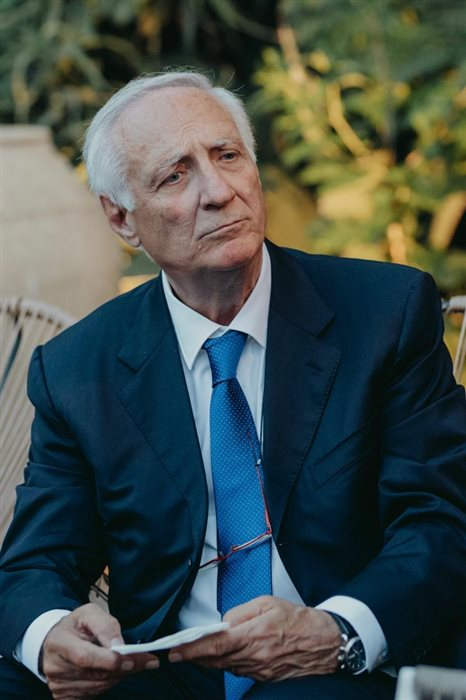
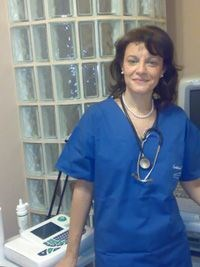
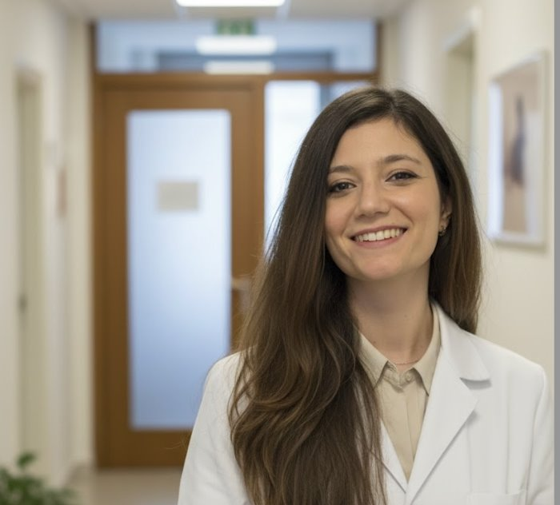
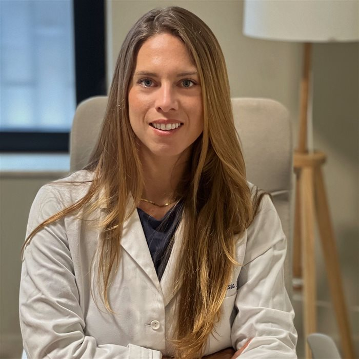
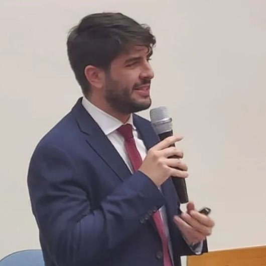

Dr Domenico Barbagallo
Medical DirectorResponsible for the medical direction of the centre, he ensures that the services provided comply with current regulations and with the quality standards of Poliambulatorio Delta.

Dr Wanda Deste
CardiologyShe focuses on the prevention and diagnosis of cardiovascular disease, with particular attention to screening and follow-up pathways.

Dr Claudia Leanza
Endocrinology and DiabetologyA specialist in hormonal, metabolic and thyroid disorders, with an integrated approach combining endocrinology and diabetology.
Dr Lucia Mannino
NutritionA nutrition consultant, she works on personalised diet plans and the assessment of nutritional status.

Dr Chiara Blatti
OrthopaedicsShe is dedicated to the diagnosis and treatment of musculoskeletal conditions, from acute trauma to post-operative follow-up.
Dr Rebecca Lombardo
OsteopathyShe provides osteopathic manipulative treatment, with an integrated approach in synergy with orthopaedics for postural and musculoskeletal rebalancing.

Dr Salvatore Coco
Otolaryngology (ENT)A specialist in ear, nose and throat conditions, with comprehensive audiological diagnostic skills.

Dr Salvatore Cristaldi
HaematologyHe deals with the assessment and monitoring of disorders of the blood and lymphatic system.
Dr Giovanni Fazzolari
RheumatologyA specialist in the early diagnosis and follow-up of inflammatory and degenerative joint diseases.
Dr Domenico Barbagallo
Occupational MedicineHe handles health surveillance and fitness-for-work examinations under Italian Legislative Decree 81/08, including for corporate agreements.
Monica Niosi
Front deskThe centre's first point of contact: she manages bookings, reception and information for patients.